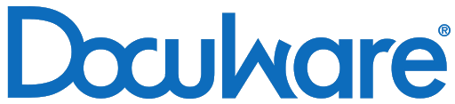

Ce projet a été conduit a sein de l'entreprise BgsAssociés.
Bgs Associées est une société de conseils et développement d'application web basé à Paris.
Le projet consiste à créer une interface de gestion électronique de documents basé sur le logiciel Docuware.
DocuWare est un fournisseur de logiciels de gestion documentaire offrant des fonctions d'automatisation des référentiels et des flux de travail, également appelés gestion de contenu d'entreprise (ECM) ou, plus récemment, services de contenu. DocuWare est également le nom du produit phare proposé par la société. En plus d'être proposé sous forme de Software as a Service (SaaS) basé sur le cloud. En janvier 2017, DocuWare est utilisé par 16 000 clients dans 70 pays.
Lors de mon stage en entreprise pour la validation de ma licence j'ai travaillé au sein de la société BgsAssociées en tant que développeur intégrateur.
Les premiers enjeux pour moi sont de réussir à intégrer une équipe en place et de collaborer avec plusieurs développeurs et clients, de tenir les délais impartis et de rester au plus près du cahier des charges et des maquettes fournis.
Les enjeux sont un gains de productivité et de temps pour les employées de la compagnie où la gestion des fichiers est conséquente. Le design, le workflow du traitement des contrats et des fichiers administratifs était très complexe et lourd, le but principal du logiciel est de le rendre simple et efficace. L'autre enjeu à ne pas négliger est de coller au plus près de l'identité de la marque.
Le principal travail du début de projet est la collaboration avec le développeur back-end pour que nos travaux soient cohérent avec le cahier des charges et qu'on mettent en place une organisation de travail. On opte pour un tableau de tâche et une organisation Agile en sprint court de 1 semaine avec une présentation hebdomadaire avec le client. Le délai de livraison étant court je livre une page toutes les deux semaines au client en adaptant le design aux retours hebdomadaire lors des présentations. Présentation que j'effectue avec l'autre développeur. Une fois le logiciel validé je l'ai rendu accessible pour les différents outils que l'entreprise dispose (smartphones, tablettes et différentes grandes tailles d'écran) sur un dernier sprint de développement. Afin pour finir le développeur back-end et moi-même on livré le logiciel au sein de l'entreprise cliente pour la mise en production du logiciel.
J'ai réalisé le travail sous la supervision de mon maître de stage Cheik M'Bodji qui à réalisé la partie back-end du projet et en collaboration avec le responsable technique de la société cliente. Résultat Le logiciel a été une réussite, suite à la livraison j'ai présenté le travail à de potentiels clients qui ont commandés le logiciel. J'ai du coup réalisé le logiciel suivant avant la fin de mon stage et l'entreprise m'a proposée de continuer notre partenariat.